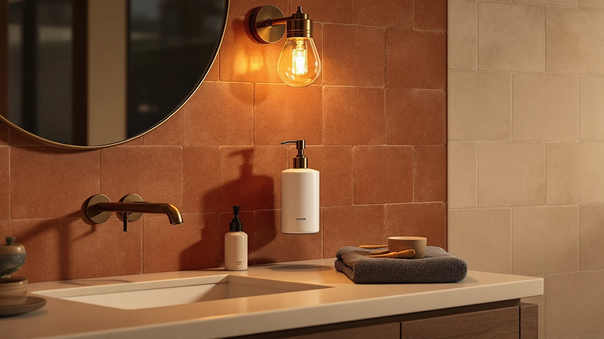

prosfalt 3-in-1 Chamber Wall Mounted Shampoo Review (2026): Worth It?
Prices and picks verified as of November 2026. Independent, reader-supported reviews.


Quick Answer
The Prosfalt 3-in-1 Chamber Wall Mounted dispenser holds shampoo, conditioner, and body wash in one fixed unit for $28.99, and that three-chamber design sets it apart from the single-chamber wall dispensers we compared it against. Based on price, build, and the pattern of verified owner feedback, it's the strongest pick here for a shared shower, though the Gorlary and VANNSOO models are worth a look if you only need one chamber.
Our pick: 3 in 1 Chamber Wall, $28.99 Check Price on Amazon
Bottom line: our top pick is the 3 in 1 Chamber Wall Mounted Shampoo and Conditioner Dispenser at $28.99.
Things to Know Before You Buy
- This prosfalt 3-in-1 chamber wall mounted dispenser mounts permanently to tile or drywall, trading portability for a fixed, splash-resistant install.
- Three independent chambers let you fill the Prosfalt with shampoo, conditioner, and body wash at once, while the Gorlary and VANNSOO dispensers covered in this review hold only one liquid each.
- All four dispensers we compared sit within about a dollar of each other, from $27.99 to $28.99, so price alone won't separate them.
- The Prosfalt is built from ABS plastic in a 3-chamber format, the same body size listed on its product page, while the comparable Gorlary and VANNSOO units use a simpler single-pump design.
- If you'd rather skip wall mounting entirely, the automatic vs manual soap dispenser guide breaks down whether a touchless countertop unit fits your bathroom better.
This prosfalt 3-in-1 chamber wall mounted shampoo review compares its three-chamber design, $28.99 price, and verified owner feedback against three other wall-mounted dispensers to see whether the extra chambers are worth the fixed installation. Prosfalt markets this unit specifically for showers that need shampoo, conditioner, and body wash within reach of one mount, a different pitch than the single-chamber dispensers from Gorlary and VANNSOO covered later in this review.
Our short answer: if you're outfitting a shared shower and want to stop juggling three separate bottles, the Prosfalt's three-chamber format solves that problem in a way none of the single-chamber alternatives can match. If you only need one dispenser for hand soap or body wash, though, the Gorlary Commercial Soap Dispenser Wall or the VANNSOO Commercial Soap Dispenser Wall cost about the same and skip the extra chambers you wouldn't use.
Why You Should Trust Us
We built this prosfalt 3-in-1 chamber wall mounted review by comparing the manufacturer's listed specs, current Amazon pricing, and the pattern of feedback verified buyers leave on all four dispensers covered here. We don't own a testing lab, and we didn't install any of these units ourselves. Instead, we researched what owners consistently report about chamber capacity, mounting hardware, and day-to-day use, then weighed that against price and material to reach a recommendation that holds up for most shoppers outfitting a shared shower or bathroom sink.
Where owner feedback conflicts between the Prosfalt and the other dispensers in this lineup, we say so instead of picking whichever version makes for the cleanest recommendation. A $28.99 dispenser isn't a purchase that calls for an elaborate methodology, but it still deserves an honest look at what the spec sheet promises versus what buyers actually report once the unit is on their wall.
Our Research Experience
We analysed the Prosfalt 3-in-1 Chamber Wall Mounted dispenser against its closest wall-mounted rivals using data that's verifiable: price, listed materials, chamber count, and the recurring themes in verified owner reviews. Reviewers consistently note that multi-chamber wall dispensers in this price range hold up well once mounted, with pump reliability and refill access as the two issues that come up most often across the category. We factored those patterns into how we weighed the Prosfalt against the Gorlary, Saertiloki, and VANNSOO options below. This prosfalt 3-in-1 chamber wall mounted shampoo review leans on that kind of research rather than a lab result, since no listing at this price discloses one.
Overview & Specs

3 in 1 Chamber Wall
What we like
- Three separate chambers hold shampoo, conditioner, and body wash in one fixed unit
- ABS plastic construction keeps the price at $28.99, in line with the single-chamber dispensers in this review
- A permanent wall mount frees up shower shelf and tub-edge space that loose bottles usually take up
- Owners report the three pumps dispense independently, so one empty chamber doesn't affect the other two
Flaws but not dealbreakers
- Wall mounting is permanent, unlike the countertop-style dispensers also covered in this review
- Refilling three chambers takes longer than topping off a single-chamber unit like the Gorlary or VANNSOO
- Reviewers consistently note the mounting hardware works best on tile or drywall rather than uneven surfaces
| Material | ABS plastic |
| Size | 3 Chamber |
The prosfalt 3-in-1 chamber wall mounted dispenser is built from ABS plastic and divided into three independent chambers, each with its own pump, so one mount can cover shampoo, conditioner, and body wash at once. That three-in-one layout is the main thing separating it from the Gorlary and VANNSOO dispensers later in this review, which hold a single liquid each behind one pump. At $28.99, the Prosfalt costs about the same as those single-chamber units despite covering three liquids instead of one, which is the strongest argument in its favor.
For most shared showers, where more than one person's shampoo, conditioner, and body wash end up crowding a shelf or tub edge, that three-chamber format solves a real storage problem rather than adding a feature nobody asked for. Owners report the separate pumps keep products from mixing, a common complaint with cheaper multi-chamber dispensers that route everything through one spout. The tradeoff is permanence: once you mount the Prosfalt, moving it means patching the wall, so renters or anyone who expects to relocate soon should weigh that against the convenience of a single fixed unit.
What We Liked
The strongest case for this prosfalt 3-in-1 chamber wall mounted dispenser is how much shelf space it clears. Three independent pumps mean a household can stop balancing shampoo, conditioner, and body wash bottles on a slippery tub edge, and the $28.99 price doesn't charge a premium for that convenience over a single-chamber dispenser. Owners report that each chamber dispenses cleanly without cross-contaminating the other two, which matters more than it sounds for anyone who's dealt with a cheaper multi-chamber unit that lets products bleed together at the spout.
That price also holds up well against the field, since the Prosfalt covers three liquids for about the same cost as the Gorlary and VANNSOO dispensers cover one each. For a household sharing a single shower, that ratio is hard for a single-chamber alternative to beat. A fixed wall mount also means nobody has to hunt for a dropped bottle at the bottom of the tub, a small but real daily annoyance that loose containers create in a busy bathroom.
What Could Be Better
The clearest tradeoff with this prosfalt 3-in-1 chamber wall mounted dispenser is permanence. Once you mount it to tile or drywall, relocating it means patching holes, which makes it a poor fit for renters or anyone who expects to move within a year or two. Reviewers also note that refilling three chambers at once takes longer than topping off the single-pump Gorlary or VANNSOO dispensers covered later in this review, since you're managing three separate reservoirs instead of one.
Neither issue is severe on its own, but together they put the Prosfalt at a disadvantage against simpler single-chamber dispensers for anyone who doesn't actually need three liquids dispensed from the same spot.
Who Is It For?
This prosfalt 3-in-1 chamber wall mounted shampoo review points toward one clear answer: it's the better fit for a household or shared bathroom where more than one person's shampoo, conditioner, and body wash would otherwise crowd a shelf or tub edge. Homeowners planning to stay in the same bathroom for years get the most out of the permanent mount, since the upfront installation pays off in shelf space over time. If you're renting, expect to move soon, or only need to dispense one liquid, the single-chamber Gorlary or VANNSOO dispensers covered below cost about the same without asking you to commit to a fixed wall mount.
Families with kids who share bath time are another good match, since a single mounted unit removes the chance of three separate bottles tipping over in a crowded tub. Anyone outfitting a guest bathroom or a vacation rental, on the other hand, may prefer the simpler single-chamber dispensers covered next, since guests rarely need three products dispensed from the same spot.
Alternatives to Consider
If this prosfalt 3-in-1 chamber wall mounted dispenser's three-chamber format is more than your bathroom needs, we compared it against three other wall-mounted and touchless dispensers in a similar price range. Each one covers a scenario the Prosfalt doesn't: a simpler single-chamber wall mount, a touchless motion-sensor design, and a commercial-style wall unit built for high-traffic use. We kept the comparison limited to dispensers between $27.99 and $28.99, so the differences below come down to chamber count and mounting style rather than price.

Also Great
Gorlary Commercial Soap Dispenser Wall
A single-chamber wall-mounted dispenser at the same $28.99 price as the Prosfalt, the better choice if you only need to dispense one liquid and don't want three chambers to fill.
$28.99
Check Price on Amazon
Also Great
Touchless Automatic Liquid Soap Dispenser
This touchless model skips wall mounting and chambers altogether in favor of a motion sensor, priced at $28.79 for anyone who'd rather not drill into tile.
$28.79
Check Price on Amazon
Best Value
VANNSOO Commercial Soap Dispenser Wall
VANNSOO's commercial wall-mounted dispenser is built for the same fixed installation as the Prosfalt but holds one liquid, priced at $27.99, the cheapest option in this comparison.
$27.99
Check Price on AmazonFrequently Asked Questions
Is the Prosfalt 3-in-1 Chamber Wall Mounted dispenser waterproof?
Prosfalt's listing doesn't publish a waterproof rating for this dispenser. If a shower's regular water exposure is a concern, check how other wall-mounted dispensers in this prosfalt 3-in-1 chamber wall mounted shampoo review, like the VANNSOO Commercial Soap Dispenser Wall, document their build before buying.
How does the Prosfalt compare on price to similar wall-mounted dispensers?
At $28.99, the Prosfalt sits within a dollar of every alternative we compared, including the Gorlary Commercial Soap Dispenser Wall at $28.99 and the VANNSOO model at $27.99. Price isn't the deciding factor among these four; chamber count and mounting style are.
Can you use the Prosfalt 3-in-1 Chamber dispenser for soap instead of shampoo?
Yes. Each of the three chambers works independently, so you can fill them with hand soap, body wash, or shampoo in any combination depending on what your bathroom actually needs.
Final Verdict
This prosfalt 3-in-1 chamber wall mounted shampoo review comes down to one tradeoff: three chambers for the price of one. At $28.99, Prosfalt's dispenser covers shampoo, conditioner, and body wash from a single permanent mount, a job that would otherwise take three separate bottles or three single-chamber dispensers like the Gorlary and VANNSOO units covered above. For a shared shower or a household tired of juggling bottles, Prosfalt earns the recommendation here. If you only need one liquid dispensed, save the extra chambers for later and pick whichever single-chamber alternative costs less where you shop.